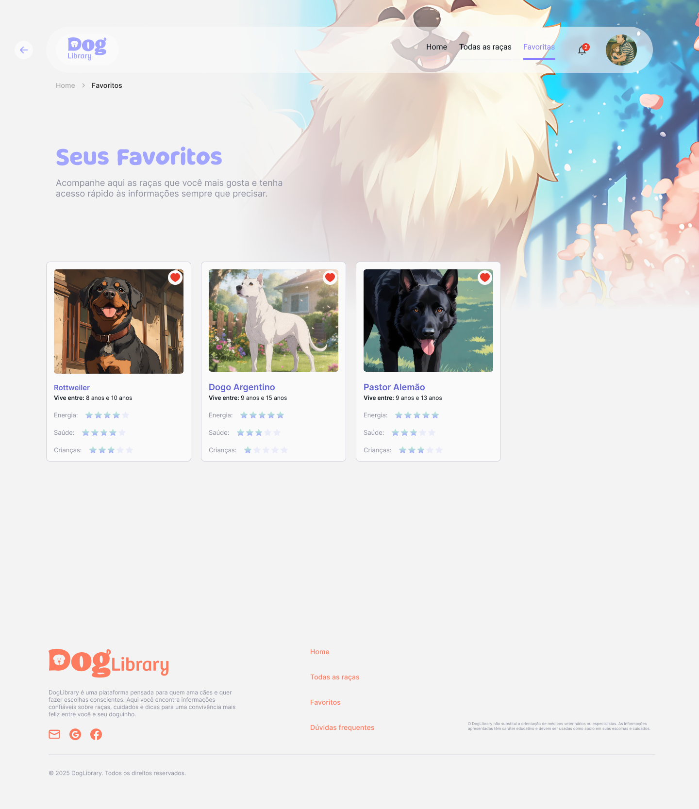
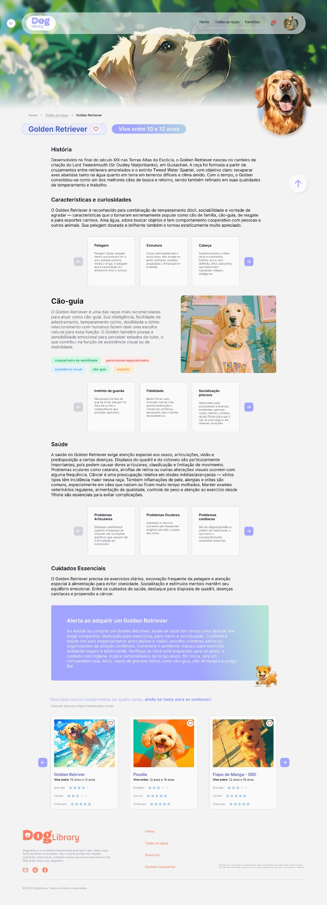
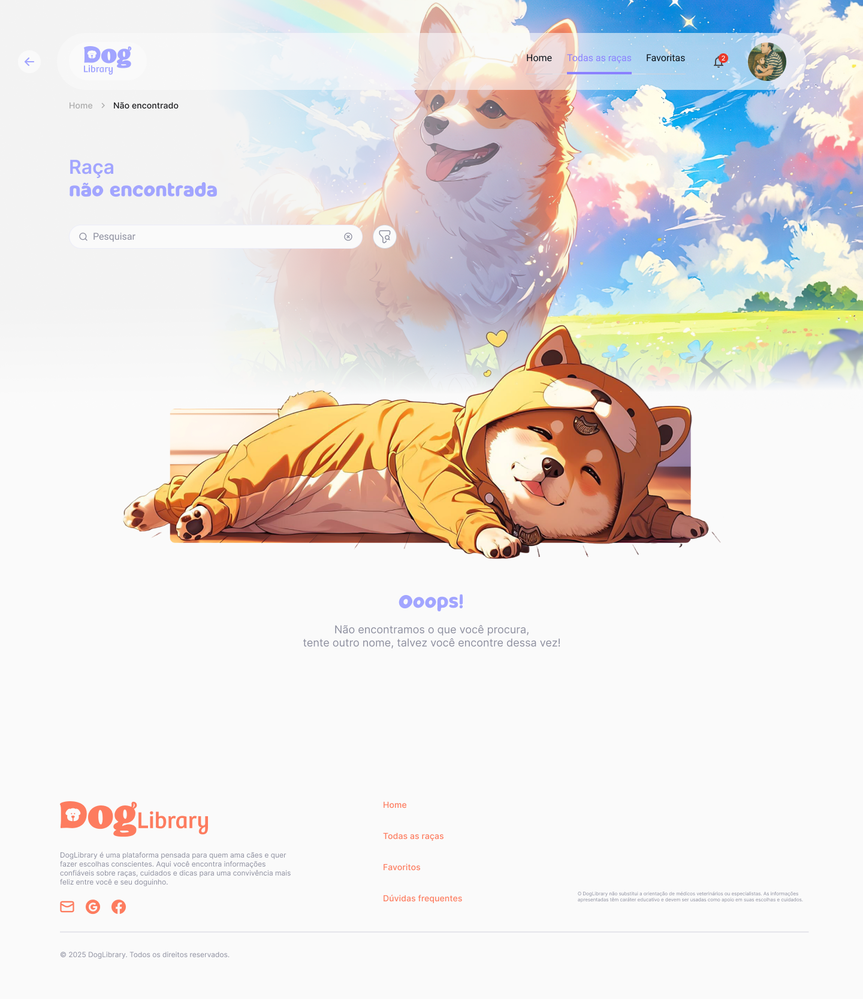
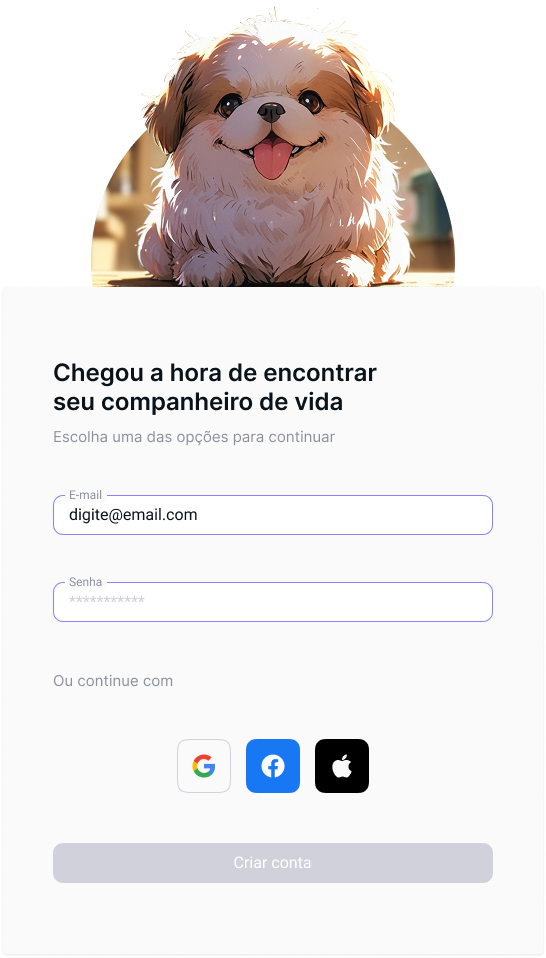
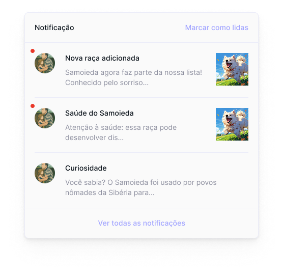

DogLibrary
Uma plataforma criada para apoiar escolhas mais conscientes na hora de encontrar um cão compatível com a rotina, o espaço e o estilo de vida do futuro tutor.

Escolher um cão não deveria depender só de aparência ou impulso.
Muitas pessoas se encantam por uma raça sem entender se ela combina com sua rotina, energia, espaço, tempo disponível e capacidade de cuidado. Essa decisão, quando feita sem orientação, pode gerar frustração para tutores e sofrimento para os animais.
Escolha impulsiva
A aparência ou a popularidade da raça pode pesar mais do que necessidades reais de saúde, energia, socialização e rotina.
Informação dispersa
O usuário precisa consultar muitas fontes diferentes e ainda assim pode ter dificuldade para comparar raças com os mesmos critérios.
Compatibilidade pouco visível
A pergunta deixa de ser apenas “qual cachorro eu quero?” e passa a ser “qual cachorro combina com meu estilo de vida?”.
De uma escolha emocional para uma decisão mais orientada.
Organizar informação para reduzir dúvida e apoiar escolhas melhores.
A solução foi estruturada em uma jornada simples: descobrir raças, filtrar por compatibilidade, comparar informações essenciais, aprofundar no perfil de cada raça e salvar favoritas para decidir com mais calma.
Home
Entrada emocional e direta para a busca por raças.
Filtros
Critérios como dócil, guarda, crianças, esportivo e preguiçoso.
Perfil da raça
História, saúde, cuidados, características e alertas.
Favoritos
Continuidade da decisão para comparar depois.
Da estrutura ao produto visual.
Os wireframes ajudaram a definir hierarquia, posição dos elementos, densidade de informação e estrutura das principais jornadas antes da interface final.

Home
Wireframe

Home
Interface final

Todas as raças
Wireframe

Todas as raças
Interface final
Soluções pensadas para clareza, comparação e continuidade.
Filtros por compatibilidade
O usuário encontra raças a partir de critérios comportamentais e práticos ligados à sua rotina.
Cards comparáveis
As raças seguem um padrão visual com dados essenciais, facilitando leitura e comparação rápida.
Perfil detalhado
Cada raça possui página com história, características, saúde, cuidados e alertas de decisão.
Favoritos
Raças de interesse podem ser salvas para que a escolha continue com mais calma.
Estado de erro útil
A tela de raça não encontrada mantém o usuário orientado e evita uma experiência sem saída.
Notificações
Alertas e novidades reforçam continuidade e mantêm o usuário informado sobre raças e cuidados.
Desbloqueie as cores do DogLibrary.
Clique nas cores para descobrir como cada uma apoia a experiência, da navegação aos alertas e estados emocionais da interface.
Escolha uma cor
Cada cor revela uso, intenção e função dentro do sistema visual. Ao explorar todas, o sistema visual é desbloqueado.
Uma galeria das principais telas e momentos da experiência.
A interface final usa ilustrações, cards padronizados e organização progressiva para transformar uma grande quantidade de informação em uma jornada mais leve.
Home
Entrada simples, emocional e visual para iniciar a busca por raças.

Filtro por perfil
Critérios ajudam o usuário a explorar raças por compatibilidade.

Favoritos
Raças salvas para consulta e comparação posterior.

Descrição da raça
Conteúdo aprofundado com história, cuidados, saúde e alerta final.

Raça não encontrada
Estado de erro orientado para ajudar o usuário a continuar a jornada.

Login
Acesso pensado para continuidade entre visitas.

Notificações
Mensagens de cuidado, curiosidades e novidades.
As decisões visuais também fazem parte da solução.
Visual acolhedor
Formas suaves, ilustrações e cores claras tornam o tema mais emocional e acessível.
Conteúdo em camadas
A interface apresenta primeiro o essencial e aprofunda quando o usuário demonstra interesse.
Comparação facilitada
Cards padronizados permitem analisar raças usando os mesmos critérios.
Interação emocional
Favoritos, notificações e elementos visuais reforçam vínculo e continuidade.
Design como apoio para escolhas mais conscientes.
O DogLibrary mostrou como UX pode transformar uma decisão afetiva em uma jornada mais clara, responsável e orientada ao bem-estar. Mais do que organizar informações sobre raças, o projeto propõe uma forma mais cuidadosa de aproximar pessoas e animais.